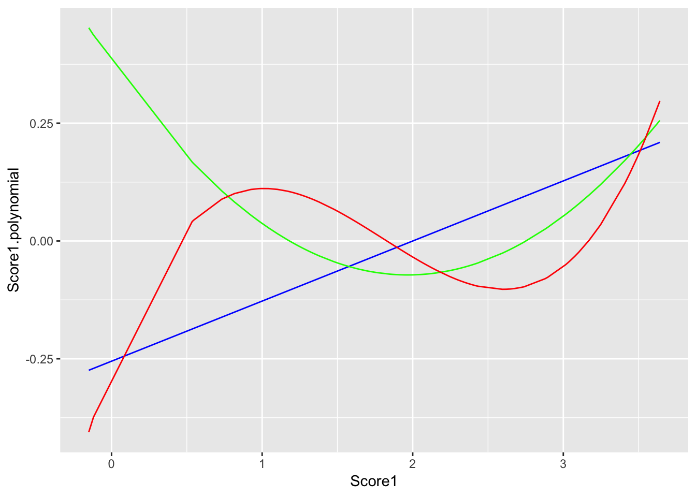

Chapter 6 Transformations
The previous chapter covered how to use the dplyr functions to easily manipulate a dataframe. This chapter will cover specific transformations you might need to perform on variables in a data set. It will heavily utlize the mutate() function from dplyr.
Let’s create a dataframe to use as an example for this chapter. Don’t worry about what this code means for now, just copy it into your script and run it.
data.orig <- data.frame(ID = c(1:100), Score1 = rnorm(100, mean = 2, sd = .8), Score2 = rnorm(100, mean = 7, sd = 1.1), Score3 = rnorm(100, mean = 10, sd = 1.8), Score4 = rnorm(100, mean = 20, sd = 2.3))
head(data.orig)
## ID Score1 Score2 Score3 Score4
## 1 1 2.3128994 4.998886 7.594651 23.87707
## 2 2 2.2991644 7.164347 6.988087 20.49789
## 3 3 2.4206979 6.131987 12.378978 22.22577
## 4 4 1.8620306 6.757135 10.593402 20.09746
## 5 5 0.9258924 7.440647 8.678837 23.38832
## 6 6 2.8784350 6.080165 8.743817 21.883216.1 Descriptive Statistics
Basic descriptive statistics include mean, median, standard deviation, max, min, skew, kurtosis, etc…
The functions to calculate these are pretty straightforward:
Base R
maximum: max()
minimum: min()
count: n()
mean: mean()
median: median()
standard deviation: sd()
variance: var()
quantiles (percentiles): quantile()
specify the percentiles with the argument
probs =(default is c(0, .25, .5, .75, 1))
e1071 package
skewness: skewness(variable, na.rm = TRUE, type = 2)
kurtosis: kurtosis(variable, na.rm = TRUE, type = 2)
For all of these you need to specify na.rm = TRUE if the variable column has missing data. It is best to just always set na.rm = TRUE. For example,
mean(variable, na.rm = TRUE)To calculate the overall mean on Score1 would look like
library(dplyr)
data <- data.orig %>%
mutate(Score1.mean = mean(Score1, na.rm = TRUE))6.2 Centering and Standardizing Variables
To standardize a variable is rather simple. Use scale()
library(dplyr)
data <- data.orig %>%
mutate(Score1.centered = scale(Score1, center = TRUE, scale = FALSE))This will center scores around the mean (which just means subtacting each score by the mean).
We can check that this is true. Mean should be 0 and standard deviation should equal the original standard deviation
round(mean(data$Score1.centered),1) == 0
## [1] TRUE
sd(data$Score1) == sd(data$Score1.centered)
## [1] TRUETo standardize a variable (create z-scores) you can use the same scale() function and just specify scale = TRUE.
library(dplyr)
data <- data.orig %>%
mutate(Score1.centered = scale(Score1, center = TRUE, scale = TRUE))Now the mean should be 0 and the standard deviation 1.
round(mean(data$Score1.centered),1) == 0
## [1] TRUE
round(sd(data$Score1.centered),1) == 1
## [1] TRUEFor an easy way to calculate centered and standardized scores on multiple variables at one time see the center() function from the datawrangling package presented in the next Chapter.
6.3 Transformations
6.3.1 log
[insert base off of Field]
6.3.2 polynomial
You can create orthogonal polynomials of variables using the poly() function and specify the degree of polynomial to go up to with degree =
poly(data.orig$Score1, degree = 3)
## 1 2 3
## [1,] 0.0398500745 -0.0580365714 -0.084153560
## [2,] 0.0380987171 -0.0591255052 -0.082478965
## [3,] 0.0535954862 -0.0479586490 -0.095023662
## [4,] -0.0176402991 -0.0707426594 -0.006827376
## [5,] -0.1370074709 0.0546597599 0.109321690
## [6,] 0.1119616297 0.0250955166 -0.080151198
## [7,] 0.0154497961 -0.0692344464 -0.056019074
## [8,] 0.0541093454 -0.0475292138 -0.095345765
## [9,] -0.0128189425 -0.0715028329 -0.014413353
## [10,] -0.0004756175 -0.0719256796 -0.033358793
## [11,] 0.0472573912 -0.0529431912 -0.090534633
## [12,] -0.2743373290 0.4523895773 -0.405507062
## [13,] 0.1794949480 0.1707545379 0.121909223
## [14,] 0.0163039748 -0.0689870489 -0.057156069
## [15,] 0.1897345908 0.1985656118 0.175481981
## [16,] 0.1589570465 0.1195179144 0.034202238
## [17,] -0.0181553158 -0.0706416979 -0.006013392
## [18,] -0.1617532371 0.1062968873 0.088619731
## [19,] 0.0203529347 -0.0676716040 -0.062415573
## [20,] -0.0530889001 -0.0548899929 0.048258443
## [21,] -0.0169789906 -0.0708667063 -0.007871709
## [22,] 0.1136980213 0.0280192166 -0.077795859
## [23,] 0.0316158830 -0.0627725096 -0.075771527
## [24,] 0.0824545797 -0.0179595369 -0.101898761
## [25,] -0.1304528192 0.0424572180 0.111028852
## [26,] -0.0068588321 -0.0719805432 -0.023668054
## [27,] -0.0628727417 -0.0473328137 0.062099848
## [28,] 0.0368262377 -0.0598890243 -0.081224547
## [29,] -0.0016194771 -0.0719786003 -0.031642518
## [30,] -0.1146723349 0.0156134165 0.109511747
## [31,] 0.0008046675 -0.0718441330 -0.035268025
## [32,] -0.0835801014 -0.0267985600 0.087292491
## [33,] -0.0009632231 -0.0719505394 -0.032628358
## [34,] -0.0123020130 -0.0715644958 -0.015222192
## [35,] 0.1329451250 0.0633308495 -0.042623566
## [36,] -0.0042850188 -0.0720289152 -0.027607347
## [37,] -0.1868101035 0.1675553430 0.041041204
## [38,] -0.0190560029 -0.0704559634 -0.004588574
## [39,] -0.2703353213 0.4369627719 -0.373697623
## [40,] 0.0860171958 -0.0134257196 -0.100972842
## [41,] -0.0473236790 -0.0586986101 0.039688331
## [42,] -0.1007141481 -0.0051460419 0.102323820
## [43,] -0.0936804081 -0.0145454563 0.096903805
## [44,] -0.1038139428 -0.0007778403 0.104347634
## [45,] -0.0667383492 -0.0439676040 0.067271849
## [46,] 0.1307693953 0.0590721054 -0.047469359
## [47,] 0.1838357640 0.1823601804 0.143787044
## [48,] -0.1063621260 0.0029165117 0.105834699
## [49,] 0.1313095307 0.0601230074 -0.046287863
## [50,] -0.0454533224 -0.0598315244 0.036854965
## [51,] -0.0972611733 -0.0098492607 0.099802442
## [52,] -0.0007700812 -0.0719411013 -0.032917898
## [53,] -0.0476317333 -0.0585071902 0.040152694
## [54,] -0.0792684469 -0.0315824373 0.082602209
## [55,] 0.0442157393 -0.0551301482 -0.088055921
## [56,] -0.0164967018 -0.0709532075 -0.008632674
## [57,] 0.1494131164 0.0977725248 0.001812837
## [58,] -0.0627602672 -0.0474275115 0.061946621
## [59,] -0.0012893369 -0.0719652578 -0.032138855
## [60,] -0.1052810262 0.0013377315 0.105223631
## [61,] -0.0150502879 -0.0711925727 -0.010911137
## [62,] -0.0452124914 -0.0599737453 0.036488454
## [63,] -0.0374178759 -0.0641264720 0.024451260
## [64,] -0.0905142594 -0.0185442926 0.094111268
## [65,] 0.1405766638 0.0788068395 -0.023769468
## [66,] 0.1371378467 0.0717296030 -0.032627750
## [67,] -0.0194937364 -0.0703614843 -0.003895580
## [68,] -0.0861928612 -0.0237695675 0.089970702
## [69,] 0.0758349805 -0.0258990890 -0.102505889
## [70,] 0.1962543442 0.2170590019 0.213217173
## [71,] 0.1926976944 0.2068947335 0.192275110
## [72,] 0.0509346489 -0.0501215918 -0.093253767
## [73,] 0.0118126258 -0.0701704359 -0.051077861
## [74,] 0.0922088018 -0.0051120024 -0.098314829
## [75,] 0.1294235945 0.0564719275 -0.050351877
## [76,] -0.1221834607 0.0279438365 0.111177752
## [77,] 0.0550270863 -0.0467528060 -0.095904889
## [78,] -0.1855461336 0.1642489954 0.044158383
## [79,] -0.0860982682 -0.0238809425 0.089875983
## [80,] -0.1509412325 0.0826522585 0.100597945
## [81,] -0.0938010222 -0.0143902706 0.097005997
## [82,] 0.0945114266 -0.0018795502 -0.096974434
## [83,] 0.2092298955 0.2556831238 0.297098468
## [84,] -0.0306984693 -0.0670051703 0.013876806
## [85,] 0.0937747447 -0.0029220072 -0.097424488
## [86,] -0.0896086719 -0.0196615359 0.093274385
## [87,] -0.0109424908 -0.0717083269 -0.017344387
## [88,] 0.0791052131 -0.0220555212 -0.102382945
## [89,] 0.0552084403 -0.0465979476 -0.096012911
## [90,] 0.0065107493 -0.0711940689 -0.043609664
## [91,] 0.1143455983 0.0291206929 -0.076884290
## [92,] -0.1284242121 0.0388058281 0.111266798
## [93,] -0.0446700010 -0.0602910534 0.035661514
## [94,] -0.0588101119 -0.0506379611 0.056473530
## [95,] 0.0085334280 -0.0708512388 -0.046493567
## [96,] -0.0389652059 -0.0633716043 0.026864535
## [97,] 0.0936207112 -0.0031389891 -0.097516056
## [98,] -0.0062372847 -0.0720009488 -0.024622927
## [99,] 0.0310391565 -0.0630676819 -0.075137877
## [100,] -0.0151419308 -0.0711782995 -0.010766954
## attr(,"coefs")
## attr(,"coefs")$alpha
## [1] 2.000375 1.933479 1.485087
##
## attr(,"coefs")$norm2
## [1] 1.00000 100.00000 61.50496 73.17875 86.53412
##
## attr(,"degree")
## [1] 1 2 3
## attr(,"class")
## [1] "poly" "matrix"You can see it creates up to three degrees of polynomials on the Score1 variable. The first degree is a linear, second is a quadratic, and third is cubic. Let’s say we want to create three new columns with each of these three polynomials. To do so we need to individually access each vector such as
poly(data.orig$Score1, degree = 3)[,1]
## [1] 0.0398500745 0.0380987171 0.0535954862 -0.0176402991 -0.1370074709
## [6] 0.1119616297 0.0154497961 0.0541093454 -0.0128189425 -0.0004756175
## [11] 0.0472573912 -0.2743373290 0.1794949480 0.0163039748 0.1897345908
## [16] 0.1589570465 -0.0181553158 -0.1617532371 0.0203529347 -0.0530889001
## [21] -0.0169789906 0.1136980213 0.0316158830 0.0824545797 -0.1304528192
## [26] -0.0068588321 -0.0628727417 0.0368262377 -0.0016194771 -0.1146723349
## [31] 0.0008046675 -0.0835801014 -0.0009632231 -0.0123020130 0.1329451250
## [36] -0.0042850188 -0.1868101035 -0.0190560029 -0.2703353213 0.0860171958
## [41] -0.0473236790 -0.1007141481 -0.0936804081 -0.1038139428 -0.0667383492
## [46] 0.1307693953 0.1838357640 -0.1063621260 0.1313095307 -0.0454533224
## [51] -0.0972611733 -0.0007700812 -0.0476317333 -0.0792684469 0.0442157393
## [56] -0.0164967018 0.1494131164 -0.0627602672 -0.0012893369 -0.1052810262
## [61] -0.0150502879 -0.0452124914 -0.0374178759 -0.0905142594 0.1405766638
## [66] 0.1371378467 -0.0194937364 -0.0861928612 0.0758349805 0.1962543442
## [71] 0.1926976944 0.0509346489 0.0118126258 0.0922088018 0.1294235945
## [76] -0.1221834607 0.0550270863 -0.1855461336 -0.0860982682 -0.1509412325
## [81] -0.0938010222 0.0945114266 0.2092298955 -0.0306984693 0.0937747447
## [86] -0.0896086719 -0.0109424908 0.0791052131 0.0552084403 0.0065107493
## [91] 0.1143455983 -0.1284242121 -0.0446700010 -0.0588101119 0.0085334280
## [96] -0.0389652059 0.0936207112 -0.0062372847 0.0310391565 -0.0151419308library(dplyr)
data <- data.orig %>%
mutate(Score1.linear = poly(Score1, degree = 3)[,1],
Score1.quadratic = poly(Score1, degree = 3)[,2],
Score1.cubic = poly(Score1, degree = 3)[,3])Let’s plot this to see what happened visually…
library(ggplot2)
ggplot(data, aes(x = Score1)) +
geom_line(aes(y = Score1.linear), color = "blue") +
geom_line(aes(y = Score1.quadratic), color = "green") +
geom_line(aes(y = Score1.cubic), color = "red") +
ylab(label = "Score1.polynomial")
6.4 Composites
Sometimes you will need to combine multiple variables into one. This is called a composite. Let’s say we want to average the three scores in the dataframe into one Score_comp variable. Previosly we calculated the means in one column and across rows. Here we want to calculate means in one ROW and across columns. To do this we need a slightly different function.
To calculate row means you can use the rowMeans() function. This is not a tidyverse function and so we will need to specify the dataframe and columns we want. Like such
library(dplyr)
data <- data.orig %>%
mutate(Score_comp = rowMeans(data.orig[c("Score1", "Score2", "Score3")], na.rm = TRUE))For an easier way to create a composite variable see the composite() function from the datawrangling package presented in the next Chapter.
6.5 Custom Transformations
In general, with mutate() you can specify any custom transformation you want to do on a variable. For instance, if you want to subtract each score by 5, and divide by 10 then you can do it! I don’t know why you would ever want to do that, but you can.
library(dplyr)
data <- data.orig %>%
mutate(Score_crazy = (Score1 - 5)/10)Or take the sum of Score1 and Score2 and divide by the difference between Score3 and Score4.
library(dplyr)
data <- data.orig %>%
mutate(Score_crazy = (Score1 + Score2)/(Score3 - Score4))The next chapter covers two more important packages